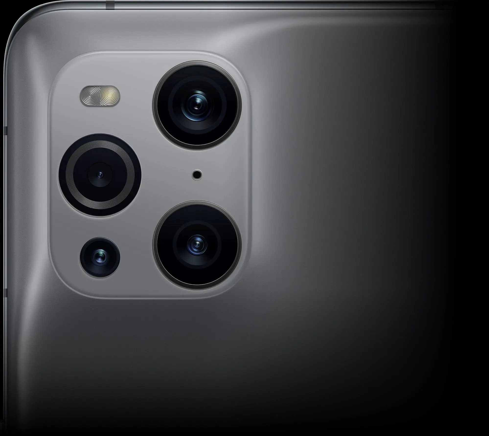
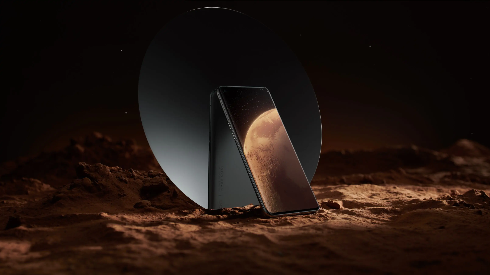

全面了解色彩影像旗舰
从捕捉、储存到显示全程 10 亿色²，隔着屏幕都能感受照片里的喜怒哀乐。
色彩唤醒感动，满满创新，等你慢慢揭开。
探索更多 Find X3 系列
10 亿色，
打开手机色彩新世界
搭载全链路 10bit 色彩引擎，重写手机与色彩的定义。
影像可捕捉前所未有的丰富细节、存储忠实无损，屏幕呈现细腻惊艳。10 亿色彩在每个环节澎湃奔涌，如此绚丽利器，静候你解锁。
旗舰四摄，致敬探索，记录此刻
两颗 10 亿色 5000 万像素旗舰主摄，场面再大，画面也出色。
60 倍显微镜，带你探索微观世界里的奇观。1300 万像素长焦，轻松拉近远方美好。
超广角
显微镜
超广角
5000 万像素超广角
Sony IMX766 传感器
1/1.56" 感光面积

显微镜
300 万像素显微镜
f/3.0 光圈
60 倍放大
3

10 亿色臻彩屏，
震撼色彩，流畅奔涌
10.7 亿色
色彩显示
120Hz
智能动态帧率
4
O1
超感画质引擎
5
O-Sync
超频响应
6
